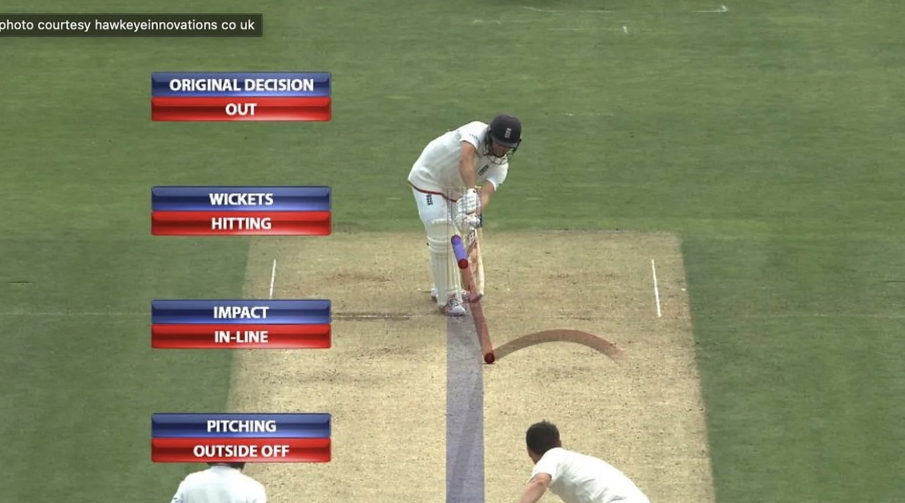
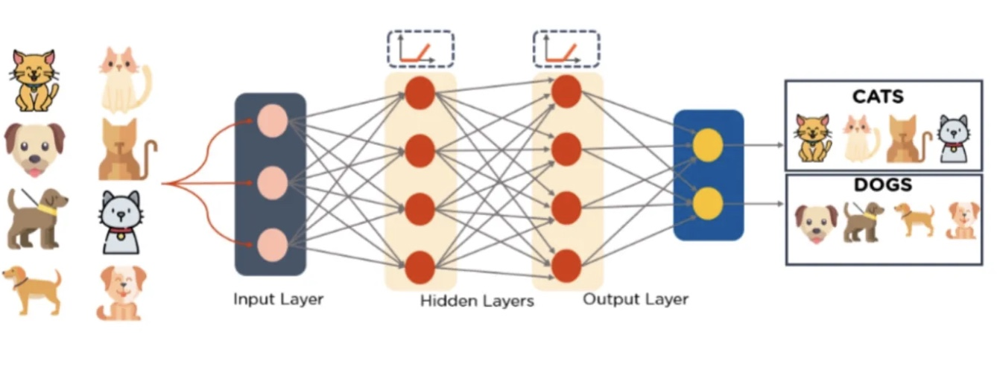

Hawkeye technology has been used in cricket for over 20 years, with the first implementation taking place in a match between England and Pakistan in May 2001 at Lord's. Since then, Hawkeye technology has made significant strides, evolving from a simple ball-tracking system to an indispensable tool in cricket, revolutionizing decision-making and improving our understanding of the game's dynamics. Being one of the world’s most followed sports, empowering cricket fans with a sophisticated understanding of Hawk-eye technology is essential to allow them to view the match beyond the surface, recognizing the impact of advanced analytics in precise ball-tracking on important game moments. Particularly today, informed fans contribute immensely to the cricketing discourses, add depths to discussions, and celebrate this wonderful mixture of modernity with tradition that defines contemporary cricket.
Hawk-eye technology involves using advanced computer systems, which enable the viewer to follow the trajectory of the cricket ball. These images are taken through hawk-eye using video cameras surrounding the cricket field. In a cricket match, six cameras usually work. A comprehensive database comprising field dimensions and play-related data is prepped before the start of the game. The system collects a vast amount of data, including the speed of the ball, the trajectory, the point of impact on the pitch, and the direction of movement. This data is crucial for accurately predicting the path of the ball. Live video feeds of gameplay are sent continually to the Hawk-Eye system during thе mаtch. The video inputs are processed by a computer that generates a detailed 3D representation of the cricket ball and its trajectory, beginning at the instant it leaves the bowler’s hand.
The first aspect we will analyze is the LBW. In LBW decisions, Hawkeye is used to predict whether the ball would have gone on to hit the stumps had it not struck the batsman’s leg. The point of impact on the batsman’s leg is crucial in this analysis. As the image below shows the red part is the actual trajectory of the ball that has occurred while the final blue part is the predicted trajectory of the ball. This involves analyzing the curvature, speed, and spin of the ball in 3D space. The system takes in a few key considerations before analyzing and predicting the path. Understanding the geometry of the batsman’s leg is crucial. The system considers the position of the leg, the height of the knee roll, and the point of impact concerning the stumps to calculate the potential path of the ball post-impact.
Hawkeye employs a sophisticated biomechanical and algorithmic framework to analyze the crucial LBW decisions in cricket. The system dynamically captures the batsman’s leg position in real time, accounting for subtle nuances like stride length, foot placement, and knee joint movement throughout the delivery. This data then informs a complex geometric model that predicts the ball’s trajectory after impacting the leg.
The core of Hawkeye’s LBW analysis lies in accurately determining the point of impact on the batsman’s leg. By factoring in leg movement and joint articulation, the system constructs a dynamic, multi-dimensional map of the leg’s position. This map goes beyond simple lateral positioning, incorporating vertical elements like knee lift to generate a more accurate projection of the ball’s post-impact path.
Once the impact point is established, Hawkeye leverages advanced statistical algorithms to predict the ball’s trajectory after colliding with the leg. This goes beyond a simple binary output (out or not out), instead providing a nuanced probabilistic assessment of the ball’s likelihood of hitting the stumps. This probabilistic approach acknowledges the inherent uncertainties in ball behavior and provides valuable information for both umpires and viewers.
Hawkeye’s sophisticated LBW analysis represents a significant advancement in cricket officiating. By leveraging biomechanical modeling and advanced algorithms, the system enhances accuracy and transparency in decision-making. The real-time analysis and probabilistic outputs foster trust and understanding, contributing to a fairer and more consistent game experience for players and fans alike.
And while it’s doing that, it’s also building a virtual map, not just caring about where the leg is left and right but also how high it’s flying about the stumps. This virtual map helps in painting a full picture of where the ball might be headed after crashing into the leg.
Now, those impact coordinates become the brain food for a math whiz algorithm. This thing is like the John Wick of math, gracefully predicting where the ball will go after the hit. It doesn’t stop at a yes or no; it goes into a cool stats mode, giving the odds of the ball crashing into the stumps post-hit.
To keep everything ticking at a rapid pace, the system syncs leg data with frame sequencing. This tight dance ensures that when the impact is calculated, and the trajectory story is told, it’s happening in the blink of an eye — microseconds, to be exact.
Hawkeye’s real-time visual overlays transcend mere entertainment; they represent a paradigm shift in how we understand and analyze cricket. Forget the sci-fi spectacle — the true climax lies in the data-driven insights and precision these visuals offer. Dynamic arrows and impact points aren’t flashy gimmicks; they’re the culmination of sophisticated biomechanical modeling and advanced statistical algorithms.
However, despite all this, there are many instances where the final decision is taken by the third umpire which again is a human judgment that ruins the whole purpose of this technology. This is why the cricketing authorities should strongly consider the idea of implementing Machine learning models, specifically Deep learning models into the system to enhance the accuracy of this system further and to avoid those errors when making 50–50 decisions.
What are Deep learning models and how can they be used?
 (from https://www.simplilearn.com/tutorials/deep-learning-tutorial/deep-learning-algorithm)
Imagine your brain learning to identify a dog. You see pictures, maybe play fetch, and slowly, your brain connects various characteristics like floppy ears, wet noses, and barks to the word “dog.” Deep learning is like that but with computers!
Instead of brains and toys, computers have millions of tiny “neurons” connected in layers. They see tons of data, like pictures of cats and dogs, and figure out the patterns that separate them. It’s like showing the computer thousands of dogs so it can figure out what makes them a “dog” on its own.
With enough data and practice, these computer neurons become super good at recognizing things, predicting what will happen next, or even creating new things like realistic cat photos! That’s what Deep Learning is all about — computers learning by doing, just like you! Basically, all you need are tons of data and millions of tiny processors.
Cricket’s hawk-eyed oracle, Hawkeye, isn’t just cameras and wires. It’s powered by the cunning intelligence of deep learning, where layers of interconnected “neurons” dissect each frame, unearthing hidden patterns in the game’s intricate ballet. But beyond LBW calls, imagine the possibilities:
Deep learning can decipher the subtle dance of seam and doosra, providing bowlers with insights to tailor their deliveries and batsmen with early warnings of deceptive spin. By analyzing historical data and real-time ball trajectories, deep learning can suggest the perfect fielding positions for every delivery, turning reactive catches into proactive interceptions.
Track every movement, from footwork to bat swing, to identify strengths, weaknesses, and areas for improvement. Imagine personalized training regimes informed by deep learning insights, maximizing each player’s potential. Superimpose predicted trajectories and impact points onto live broadcasts, offering viewers and players alike a deeper understanding of the game’s unfolding drama.
While not replacing human judgment, deep learning can provide real-time confidence scores for LBW calls, empowering umpires with additional data to make informed decisions even in the most pressurized moments.
Hawkeye’s deep learning capabilities are just beginning to unfold. This isn’t just technology revolutionizing officiating; it’s a transformative force, enriching the game for players, coaches, and fans alike. As deep learning evolves, expect Hawkeye’s vision to sharpen further, paving the way for an era of cricket bathed in unprecedented precision and insightful understanding.
Hawk-Eye’s journey with Deep Learning is just beginning. While human judgment remains paramount, this AI partnership can provide invaluable data and insights, enhancing accuracy, transparency, and fan engagement. As Deep Learning evolves, Hawk-Eye’s vision will sharpen, paving the way for a future of cricket bathed in unprecedented precision, informed decisions, and electrifying fan experiences.
I have written this article on medium website as well the link is below: https://medium.com/@akshaysg03/hawkeye-uncovered-exploring-the-depths-of-crickets-precision-technology-58c4c0bd21ad
Written By Akshay Srinivas
2. https://www.sciencedirect.com/science/article/pii/S1110016823003368